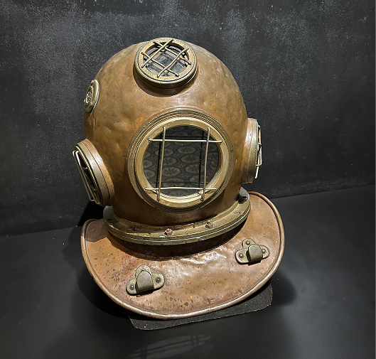

O arqueólogo que mudou a história

Em em 31 de junho de 1967, o arqueólogo Breno Augusto dos Santos desceu de helicóptero em uma serra da região de Carajás e, enquanto aeronave era abastecida pelo piloto, começou a quebrar os primeiros blocos com o seu martelo: "O pó marrom avermelhado indicava que a crosta da clareira correspondia a uma 'canga' de minério de ferro[canga é uma área rica em minério na superfície]". Estava descoberta a mina da Serra dos Carajás.
Mergulho para ficar rico
O escafandro é um item da roupa de mergulho impermeável que foi desenvolvida para permitir a realização de trabalhos no fundo da água. Era uma armadura de borracha e latão que foi bastante utilizada em garimpo de diamantes e cristal no Rio Tocantins, em Marabá, entre as décadas de 1930 e 1960. A descoberta dos depósitos de Gemas de Diamante cristal de rocha no leito do rio Tocantins nas proximidades de Marabá na década de 1930, fez ocorrer uma intensa imigração de garantias e Comerciantes para a região. O equipamento pesava Cerca de 80 kg e os escafandristas (mergulhadores) ficavam até uma hora embaixo d'água garimpando diamante

Cristais euédricos de muscovita

Calcário

Crosta laterítica ferro-aluminoso
Malaquita
Gostou do que viu? Venha ver de perto e nos faça uma visita!